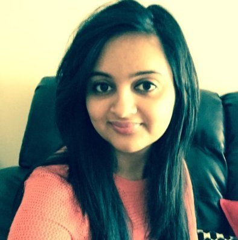

|  |
Name: Sharvari Sangle |
Maps happen to be central to things like local commerce, planning, investment, especially in the suburban and urban areas. The presence of online maps is limited and this urged me to take up a challenging career in the field of GIS, which gave me a strong platform to combine spatial as well as non-spatial data.
From my early childhood till today, my most remarkable characteristics have been my curiosity to learn new topics. My keen interest for learning new ideas, when combined with my inner desire to reach a degree of excellence in every piece of work I perform, enabled me to acquire significant knowledge on various aspects of Geography and technology, as well as leading me through a successful educational career.I have been working in the field of GIS for the past 3.8 years, focusing mainly on Geographical Information Systems, GIS Development. I got to learn about GIS during my second year of diploma course, when I chose to give a presentation on Introduction to GIS which involved basic concepts of GIS like how, where and when it is used. It was my first step towards the field of GIS and my curiosity and interest for the filed increased as I started to explore more. However I didn’t get much opportunity to explore more in my academics about GIS coming from Information Technology department.
I always had an interest in working with development and customization of GIS products. I was fortunate enough to start my professional career with Cybertech Systems and Software Limited, India, where I was working as a Technical Support Analyst for 1.8 months, SDK Unit with ESRI Support Services, ESRI Inc., Redlands, USA.I learned a lot about GIS after I started working and going through the training in my company. It was difficult at first to learn new things because I only had my programming background and I was naïve to this field. But with my persistent efforts and hard work I got a hold over the development of GIS applications.ESRI has provided a platform to implement all the GIS functionalities in various environments like ArcGIS Desktop, ArcGIS Engine and ArcGIS Server. ESRI provided me a best platform to start the development with ArcObjects. ArcObjects are set of libraries provided by ESRI to develop customized GIS applications and also extend the functionality available with ArcGIS Desktop. I started supporting ESRI Clients across United States. This involved supporting ESRI Clients who were developing GIS applications by extending ArcObjects framework in either C#/VB.NET environment and also creating custom web applications using ESRI’s Server APIs – Silverlight API/Flex API/JavaScript API. Currently I am working at U Services as a Graduate Research Asssistant- GIS analyst, my responsibilities are Data management, ArcGIS adminstration, Server Management, data handling, proving services to the clients.
Along with academics and professional life I am an artistic person. I was active in Student council body in my Diploma and Bachelors College working for both technical and Art committees. I have participated in singing competitions at school level. During my engineering I had participated in Inter college Drama competitions like “Firodiya” and “Purushottam”.In these competitions we competed against 52 colleges falling under Pune University. I was a lead actress for “Firodiya”. I have also worked back stage as a costume designer. Participating in these competitions lead me overcome my stage fear, gave me a new field for exposure. The confidence to present yourself in front of 200 audience, being a team player, confidence to face your critics and take them in positive way to excel yourself. I am also a freelancer artist, making Acrylic abstract paintings is one of my hobbies. Being active in art work gives a peace of mind and allows to rejuvenate me mentally. My ultimate goal in my career is to make a commendable contribution to the field of GIS by increasing the presence of online maps and to make the society a better place to live in.
I am confident that my academic records, professional experience and practical knowledge combined with my eagerness to do higher studies exhibit the perseverance and zeal required by a GIS professional. I strongly feel that the technical challenges encountered in the graduate program has provided motivation and opportunity for methodological innovation.
I have many ambitions for myself as I embark on this stage of my life. I believe that a graduate study has provided milestone in my career along with invaluable experiences and skills that will allow me to become a successful and innovative professional in the field of Geospatial technology.